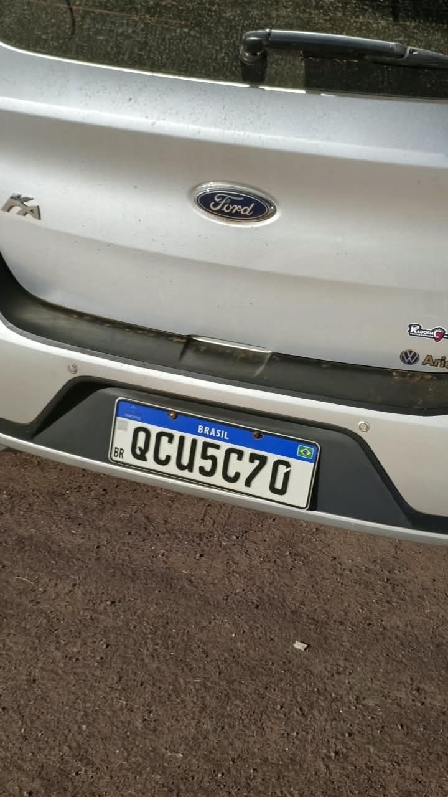
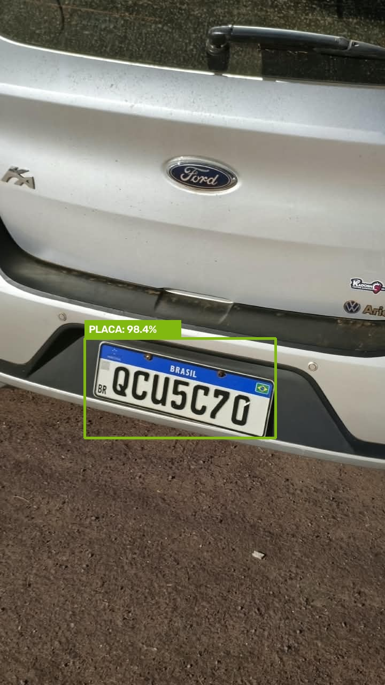
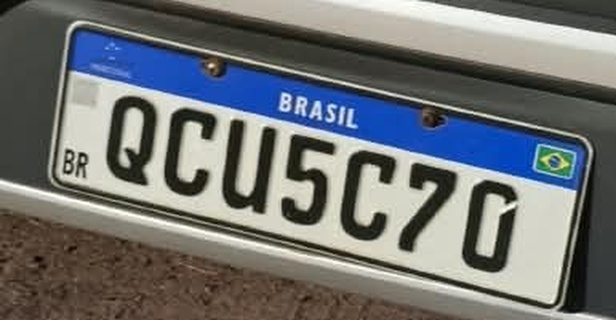
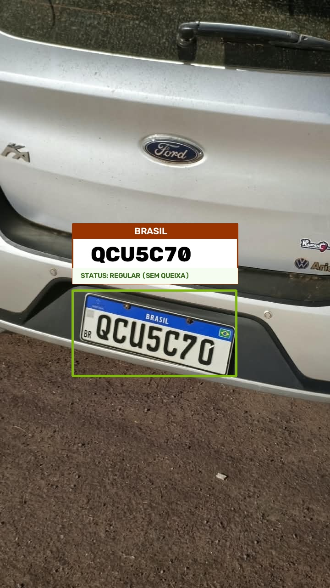
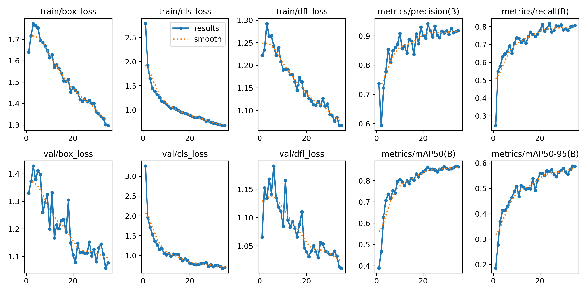
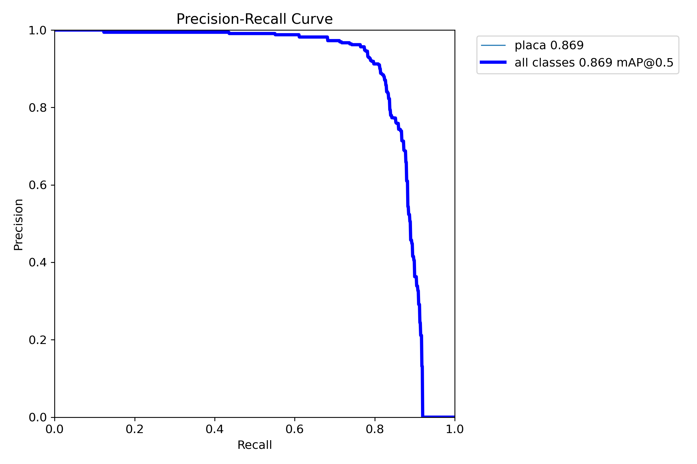
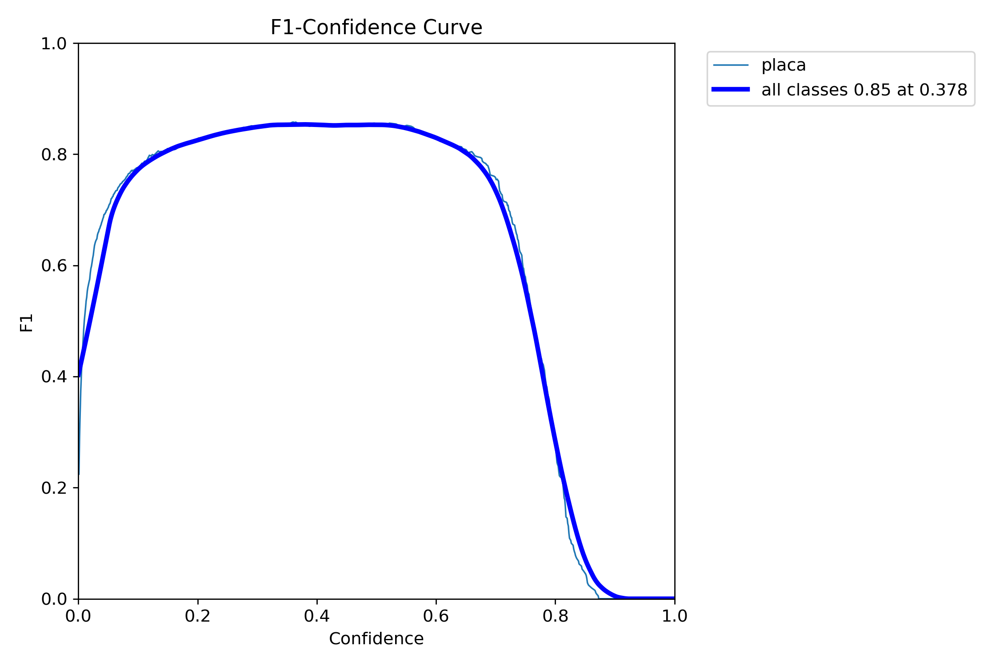
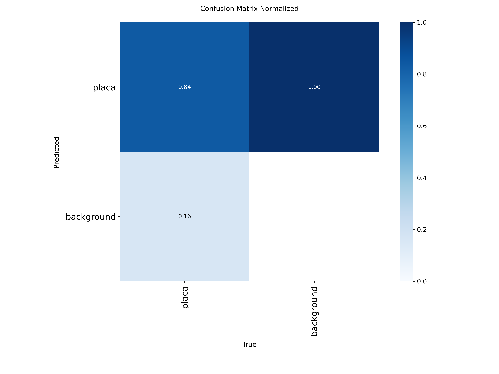

Pipeline completo construído com YOLO 1 para localização de placas (models/best.pt),
Fast-Plate-OCR (CCT-XS) para leitura ultrarrápida do recorte,
PaddleOCR + regras CONTRAN para auditoria de alta precisão e consulta instantânea em banco SQLite.
Acerto exato dos 7 caracteres no dataset completo (85 placas), com 0 confusões 1/7, B/8 e O/Q.
Modelo cct-xs-v2. Acurácia útil (até 1 erro) de 95,3% no dataset completo.
Tempo exclusivo do Fast-Plate ONNX em CPU (~63 FPS no crop). Na cena completa com YOLO 1 em CPU: ~409 ms.
Amostragem assíncrona configurada a cada 60 ms com canvas overlay, histórico lateral e alerta sonoro de roubo.
Ao testar o detector de caracteres YOLO 2 isolado sobre as 71 fotos reais de tráfego (comparativo_yolo_vs_ocr.csv), apenas 5 placas (7,0%) tiveram todos os 7 caracteres corretos. Na identificação veicular, acertar 6 caracteres e errar 1 único invalida a consulta policial.
Mesmo quando um modelo atinge 99,3% de mAP@50 em caracteres isolados de laboratório, inclinação, reflexo e colagem da fonte fazem a acurácia individual cair em campo. Com ~68% de acerto por caractere independente, a chance de acertar a placa inteira cai exponencialmente:
Veículos fotografados fora do eixo exibem placas inclinadas (no experimento de deskew foram registradas inclinações como +11,6° e +15,2°), quebrando leituras que dependem de ordenação horizontal rígida.
Superfícies metálicas refletem faróis e luz solar direta, enquanto garagens e fotos noturnas reduzem o contraste entre os traços pretos e o fundo branco da placa.
A tipografia Mercosul possui recortes antifraude que provocam trocas frequentes em OCRs genéricos entre Q/O, B/8, 1/7/I e 0/6.
OCRs generalistas frequentemente leem a palavra superior "BRASIL", o código lateral "BR" ou parafusos de fixação, injetando caracteres falsos antes da placa real.
O sistema evoluiu de um pipeline de segmentação caractere a caractere (V1) para decodificação direta em bloco com roteamento híbrido (V2). Alterne abaixo para inspecionar ambos os fluxos com fidelidade ao código.
/api/detectar ou /api/detectar_live
Recorte exato sem padding (conf=0.20 / 0.25)
Lê 7 chars em bloco (~15,9 ms) + regras CONTRAN
Se conf < 0.82 ou inválido: testa original, miolo e CLAHE
Consulta placa e dispara alerta em caso de roubo

Imagem recebida por upload ou frame JPEG da webcam. Observe a inclinação natural e o reflexo no para-choque.

O DetectorPlacas (best.pt, mAP@50 de 86,9% na validação) localiza a placa com conf=0.20 (foto) ou 0.25 (live).

O crop exato vai direto ao Fast-Plate CCT-XS (~15,9 ms). Se conf < 0,82 ou padrão inválido, o PaddleOCR reavalia original, miolo sem tarja e CLAHE.

Pós-processamento CONTRAN (LLLNLNN / LLLNNNN) normaliza a placa e consulta data/veiculos.db para checar ocorrências de roubo/furto.
Métricas extraídas diretamente dos checkpoints .pt e dos relatórios técnicos de avaliação.
1.500 treino / 300 validação, imgsz=640, batch=16).0.85 em conf=0.378; na API usa conf=0.20 (upload) e 0.25 (live) para priorizar recall, com fallback para close-ups.392,8 ms por imagem completa.


O platô largo entre 0.20 e 0.55 permite operar com limiar de 0.20–0.25 sem degradar o equilíbrio precisão/recall.

Dos rótulos reais de placa na validação do Open Images V7, 84% foram detectados e 16% ficaram abaixo do limiar (classificados como background).
Todos os números abaixo foram conferidos diretamente nos arquivos de saída em relatorios_benchmark/ e data/comparativo_yolo_vs_ocr/, respeitando o escopo de cada experimento.
Comparativo direto na mesma base de 85 placas: PaddleOCR (80/85), Fast-Plate CCT-XS (78/85), Fast-Plate CCT-S (77/85) e Pipeline V1 EasyOCR (68/85).
Escala logarítmica. O Fast-Plate CCT-XS processa o crop em 15,94 ms; somando os 392,75 ms médios do YOLO 1 em CPU, o ciclo completo na imagem fica em 408,69 ms.
Contagem real dos CSVs: erros graves (2+ caracteres divergentes) caíram de 15 placas (EasyOCR V1) para apenas 4 placas no Fast-Plate CCT-XS e no PaddleOCR.
As primeiras 40 fotos reúnem 47 placas: PaddleOCR acertou 45/47 (95,74%) e Fast-Plate CCT-XS/S 43/47 (91,49%). No teste isolado de 1 placa/foto (71 fotos), YOLO 2 acertou 5/71 (7,0%) e EasyOCR 34/71 (47,9%).
Métricas reais auditadas sem mistura de denominadores entre experimentos.
| Motor / Pipeline | Escopo | Exato (7 chars) | Parcial (1 char) | Acurácia Útil | Tempo OCR (Crop) | Tempo Total (Foto) |
|---|---|---|---|---|---|---|
| YOLO 2 Caracteres (Isolado) | 71 fotos (1 placa/foto) | 7,0% (5/71) | N/D | N/D | N/D | N/D |
| EasyOCR (Isolado + Deskew/CLAHE) | 71 fotos (1 placa/foto) | 47,9% (34/71) | N/D | N/D | N/D | N/D |
| Pipeline Misto V1 (EasyOCR + YOLO 2) | 85 placas (71 fotos) | 80,00% (68/85) | 2,35% (2/85) | 82,35% | ~11.500 ms (rel.) | 15.382 ms |
| Fast-Plate CCT-S (5,02 MB ONNX) | 85 placas (71 fotos) | 90,59% (77/85) | 3,53% (3/85) | 94,12% | 75,04 ms | 467,79 ms |
| Fast-Plate CCT-XS (3,19 MB ONNX) | 85 placas (71 fotos) | 91,76% (78/85) | 3,53% (3/85) | 95,29% | 15,94 ms | 408,69 ms |
| PaddleOCR (PP-OCRv6) + CONTRAN | 85 placas (71 fotos) | 94,12% (80/85) | 1,18% (1/85) | 95,29% | 4.915 ms (rel.) | 6.339 ms |
Nota sobre o modo hibrido em src/ocr_hibrido.py: não há um CSV de benchmark separado executado para o fluxo combinado. Cruzando os resultados individuais dos CSVs com a regra atual do código (conf_fast ≥ 0,82 retorna Fast-Plate direto), o Fast-Plate CCT-XS é aceito diretamente em 83 de 85 placas e o PaddleOCR é acionado em 2 placas, resultando em desempenho equivalente ao CCT-XS isolado (78/85 = 91,76%). Nos 3 casos em que o CCT-XS errou 1 caractere com confiança alta, o PaddleOCR acertou — indicando que reduzir a confiança direta ou acionar o árbitro em séries ambíguas pode elevar o modo combinado em direção aos 94,1% do PaddleOCR.
Substituição da interface legada em Streamlit (src/app.py) por um servidor assíncrono em FastAPI (src/server.py) e frontend leve (src/templates/index.html).
<canvas> para bounding boxes de câmera em tempo real.DetectorPlacas carregado no startup; leitores Fast-Plate e PaddleOCR cacheados sob demanda.POST /api/detectar: hibrido, live (Fast-Plate) e deep (PaddleOCR).GET/POST /api/veiculos para consultar e cadastrar placas regulares ou com queixa de roubo.
O vídeo da webcam é exibido continuamente no navegador, enquanto frames JPEG são enviados a cada 60 ms (~16,7 FPS máx.) com trava processandoFrame para evitar fila.
O backend retorna apenas JSON com bbox, placa, confiança e status. O frontend desenha as caixas e rótulos no <canvas> sobreposto ao vídeo.
Para veículos com status_roubo === 1, o navegador emite alerta sonoro via Web Audio API, desenha caixa vermelha e destaca o card no feed lateral.
O histórico lateral registra as últimas 25 leituras únicas com cooldown de 2,5 s por placa para evitar entradas repetidas do mesmo veículo.